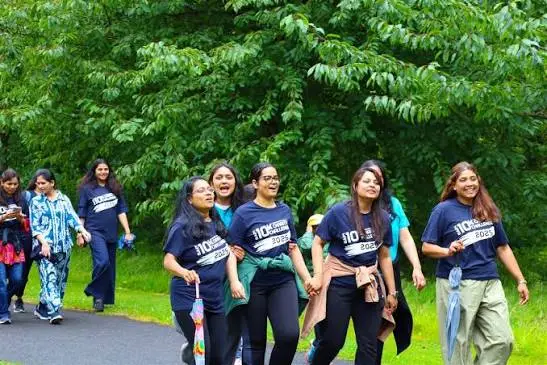
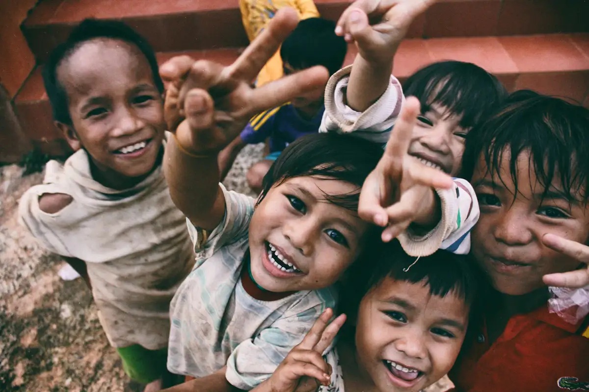

Understand the need
Listen to community members and identify a concrete barrier: a missing resource, limited service access or a programme that needs consistent support.
Generosity becomes more meaningful when people, communities and practical solutions come together with transparency and compassion.

✦ Grassroots Impact
STACKLY began with neighbours helping neighbours. That same spirit connects supporters with education, essential care and community initiatives.
To connect compassionate individuals with meaningful causes through transparent, responsible and sustainable support.

A world where generosity and community collaboration allow every person to live with dignity and hope.
Local voices inform each initiative. We look for clear needs, realistic budgets, accountable partners and outcomes communities can sustain.
Our foundational pillars ensure trust, clarity, and genuine human impact.
Reviewed plans, clear needs and local accountability.
Follow funding goals, milestones and community outcomes.
Local voices shape practical, responsible support.
Stay connected with campaign progress and stories.
Useful outcomes, from learning resources to water access.
Compassion, integrity and long-term care guide our approach.
Milestones that shaped our nationwide community.
Neighbours organised food and learning-resource drives.
Local partners expanded education and healthcare support.
New teams joined water and environmental projects.
Our community continues to turn generosity into action.
Lives supported
Meaningful campaigns
Community volunteers
Raised together
We present fundraising goals, progress and community outcomes clearly.
We review community needs, practical plans, budgets and partner accountability.
Explore sample progress and updates in your donor dashboard.
Sample campaign and impact reports are available in the admin dashboard. All figures on this website are demonstration data.
Dedicated changemakers empowering local causes.
Community programmes
Demonstration team profileVolunteer engagement
Demonstration team profileImpact & partnerships
Demonstration team profilePhotos from our latest community drives across India.


Stories from people who make change possible every single day.
"Seeing classroom updates makes my giving feel connected to something real."
"I came to help for a morning. I found a community I wanted to keep showing up for."
"Clear goals help us understand where our support can make a difference."
A rigorous, community-first methodology for sustainable progress.
Listen to community members and identify a concrete barrier: a missing resource, limited service access or a programme that needs consistent support.
Define activities, responsibilities, timelines and a budget. Assess whether local partners can deliver and report on the proposed work.
Track resources provided and listen to feedback. Share what worked, what changed and what needs improvement before the next phase.
Compassion means treating people as partners in change. Inclusion means making space for different needs, backgrounds and abilities. Accountability means being clear about what a project can realistically achieve.
We value solutions communities can maintain: training alongside equipment, local stewardship alongside planting, and regular coordination alongside emergency support.
Read our transparency guideWorking together with grassroots teams, corporate partners, and mentors.
Local teams offer context, relationships and knowledge of the support that is most useful. Their experience helps shape responsible delivery.
Colleagues can contribute through volunteering days, skill sharing and coordinated support for a defined community goal.
Teachers, mentors and healthcare professionals help translate resources into useful, respectful services.